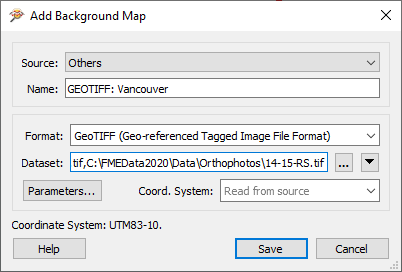
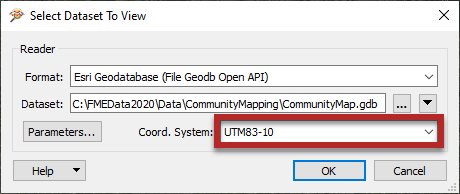

After completing this unit, you’ll be able to:
The FME Data Inspector has a number of controls to assist in showing the data in an orderly manner.
View Type
The main view window can be switched between 2D spatial, 3D spatial, and Table views:
2D and 3D data can be viewed together.
Display Control Window
Management of feature display order is carried out in the Display Control window.
Each dataset and feature type can be dragged above any other to promote its display order in the View window:

Feature Types can only be ordered within their container dataset.
For example, "Libraries" can be promoted above "GarbageSchedule" in the display, but they cannot by themselves be promoted above the separate Parks dataset.
Display Status
Each level of the Display Control window has a checkbox to turn data on and off at that level:

You can choose to turn off individual feature types or an entire dataset at once.
Feature Counts
Each Feature Type in the Display Control window is tagged with the number of features it contains, in parentheses after the feature type name. So in the previous image, we can see that there are 113 drinking fountains (or 113 features called DrinkingFountains) in the city of Vancouver.
Clicking a feature count selects all of those features for display in the Feature Information and Table View windows, and also activates the tool File > Save Selected Data As:

Style
Each feature type can be assigned a different color or style that applies to its geometries. To access this functionality click on the style icon for that feature type in the Display Control window:

The Drawing Style dialog allows you to set all manner of symbology for a feature. That includes feature color (and degree of transparency), point icon/symbol, point size, line thickness, etc.:

Notice that the dialog only displays symbology options for the type of geometry available. Here it is for a polygon feature. Other geometry types display different options.
The ability to view maps (or other imagery) as a backdrop to your spatial data is activated by clicking Add a background map on the Data Inspector toolbar:

The background map dialog lets the user add a background map from a web service. Some of these - such as ArcGIS Online - require an existing account:

You can also use an existing dataset (of any FME-supported format) as a backdrop, by selecting Others and filling in the Format and Dataset:

Coordinate Systems
Source data must be referenced with a valid coordinate system to view it with a background map. If the coordinate system is not recorded in the dataset itself, you may enter it into a field when opening the dataset:

FME can display the source data against a background map, even when there are several source datasets of differing coordinate systems. FME does this by reprojecting the data to the coordinate system used by the background map. Therefore it's recommended that you turn off the background maps when you want to inspect the data in its original form.